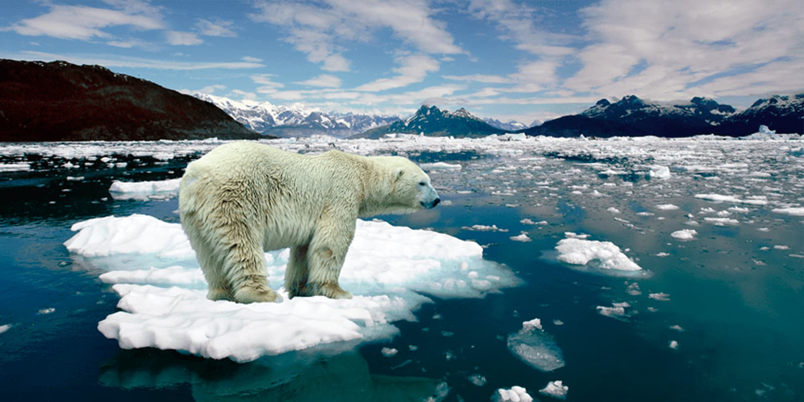
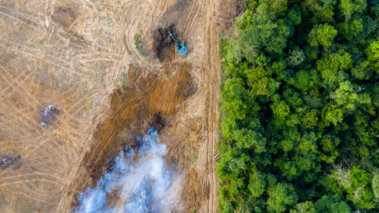
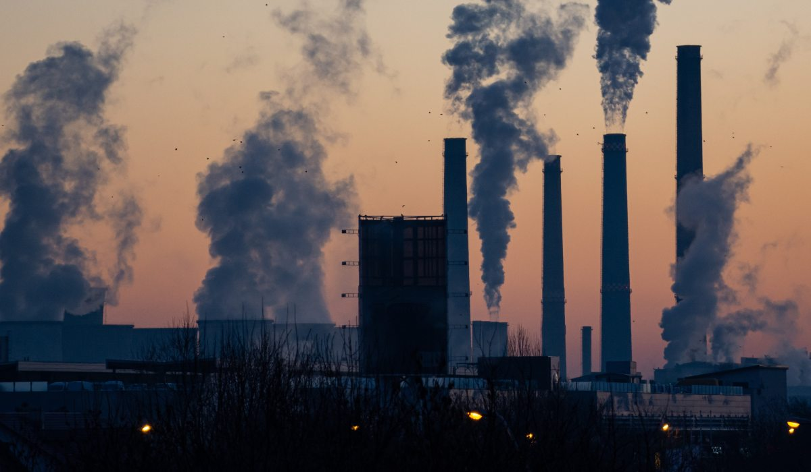
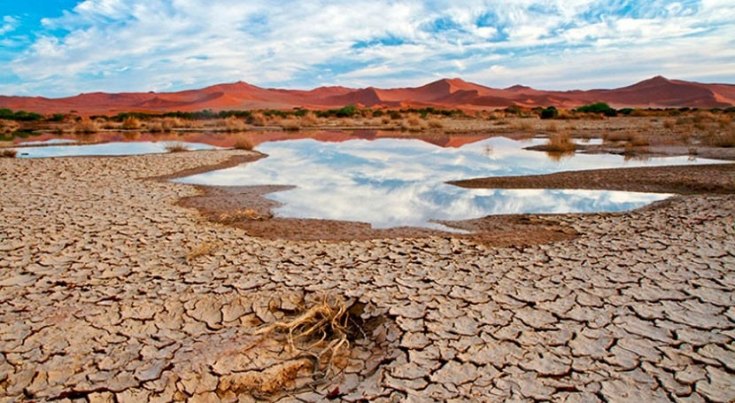

Principales Desafíos Ambientales
Descubre los cuatro grandes retos ambientales que enfrenta nuestro planeta y cómo podemos actuar para crear un futuro más sostenible.

Cambio Climático
El aumento de temperaturas globales y sus efectos devastadores en nuestro planeta.

Pérdida de Biodiversidad
La extinción acelerada de especies y la destrucción de ecosistemas vitales.

Contaminación Generalizada
La contaminación del aire, agua y suelo que afecta la salud y el medio ambiente.

Escasez del Agua
La crisis hídrica global y la gestión insostenible de nuestros recursos acuáticos.
¡Solo nosotros podemos cambiar el cambio climático!
Actuemos juntos para proteger nuestro planeta y construir un futuro sostenible. Cada acción cuenta, cada decisión importa.